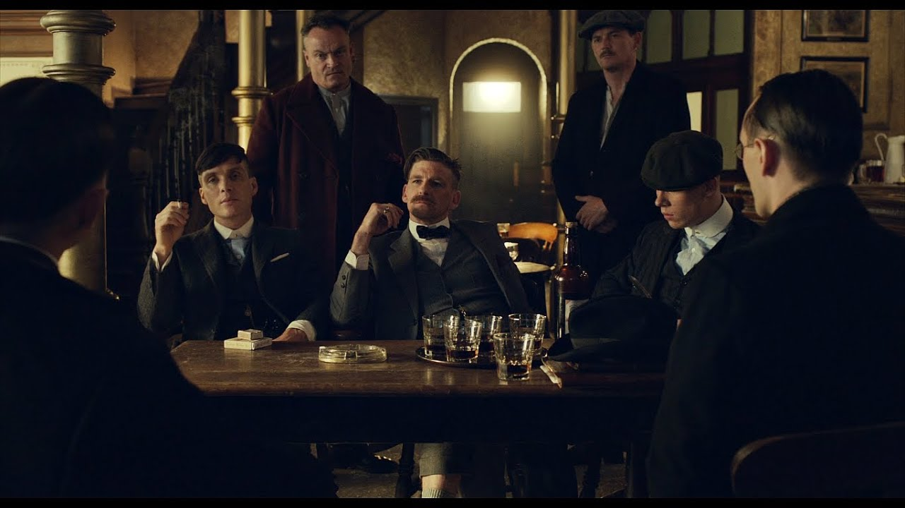

Se puede decir en muchos casos que las series estan divididas por un antes y un despues, cada escena puede marcar de diferentes maneras una serie, sea para bien o para mal, pero no cualquier momento puede marcarla a tal punto que cada parte de la trama se cambie solo por dicha escena, puede ser una escena un poco simple, como puede ser una escena bastante grande, puede ser desde que se estrello un carrom, hasta que se murio uno de los personajes principales, estas escenas se vuelven importantes por el hecho de que estan puestas en el momento exacto.

temporada 1
aun que la serie cuenta con muchos momentos importantes, en la primera temporada podemos ver como por el deseo de tommy de ser mas grandes que cualquiera, su codicia en su maximo explndor comenzo a hacer alianzas y a jugar con cada persona con el que podia, pero algo que no pudo evitar es el hecho de enamorarse de la queria oficial, la cual mas adelante lo traicionaria dejandonos una frase que para mi en lo personal me encanta mucho -te rompere el corazon -ya esta roto, responde el simplemente me encanta esta frase.
Temporada 2
En la segunda temporada podemos ver como por la codicia esta vez no solo de tommy si no de toda la familia buscan comenzar negocios internacionales, buscan espandir sus negocios a tierras extrangeras en las cuales, muchas guerras y problemas los estan esperando, alianzas que en un futuro pueden ser traiciones, investigaciones de policias que buscan acabar con ellos
Temporada 3
Aqui empezamos mas fuerte porque tommy decidio perdonar a la policia en las temporadas anteriores y comenzar una familia con ella, empezamos con uno momento especial la cual es la boda, lugar donde casi termina en desastre por culpa de un par de negocios que nuestro querido tommy esta guardando bajo la manga, cuyos negocios no son por codicia sino para evitar problemas con el ejercito russo.
Temporada 4
En la cuarta temporada esta uno de los momentos mas importantes de toda la serie la muerte del hermano menor, cada uno de ellos es amenazado con que van a morir pero como son los "peaky blinder" nada les va a pasar pero por equivocaciones y traiciones tienen que enfrentar la cruda realidad que no son inmortales y en cualquier momento van a ver las consecuencias de sus actos que no se pueden catalogar exactamente como buenos, aunque es un duro golpe ellos van a poder salir adelante o eso esperamos.